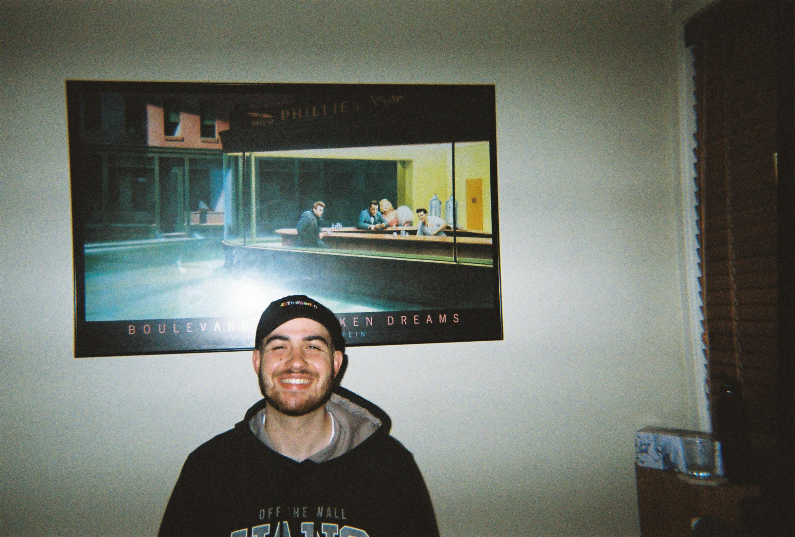

After working in jobs that I've fallen into and ultimately not liking.
I have decdided to take matters into my own hands and do what I want to do,
I have taken a lot of important skills from my previous experience and utilising
them to be the best version of myself and hoping to use them within Web Development.

EDUCATION
2018: Graduated Highschool with HSC
2019-2020: Graduated at TAFE with Cert VI, Real Estate
2024: Completed RSA & RCG
WORK EXPERIENCE
2019 - 2021 | I.T Helpdesk | Synergy IT Consulting: First point of contact for business, answering phones, responding to e-mails in
regards to assistance. Creating and managing a ticket system that the senior techs would use
and for customers who had issues. Started assiting with Level 1 requests such as:
Fixing e-mails
Setting up laptops and PC's
Onsite delievery and pickups
Installation of new software on clients computers
2022 - 2023 | Sales Associate | Domain Home Loans: Calling potential customers/clients
and introducing them to the business and assisting with their future loan or current
loan. Up to 40-45 contacts per day with a minimum 10% conversion rate. Exceeded minimum
requirement with at least 15%-20% conversion per day. Cold calling.
2023 FEB - 2023 JULY | Customer Service Representative | Commonwealth Bank of Australia:
Assited customer over the phone with issues regarding their netbanking. Completed a
thorough Identification process for each customer and then assisted with their issue,
issues include:
Increasing transfer limit
Updating addresses
Transferring money between accounts
Resolving payment disputes
SKILLS
Some of the skills I've acquired over the course of my work life which I am forever
grateful for INCLUDE:
Effective Communication
Resilience
Problem Solving
Fast Learner
Confident
WEAKNESSES
Some of the weaknessess that I have observed about myself over the course of my work
life which INCLUDE: